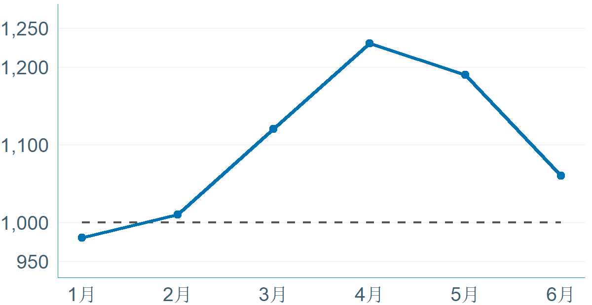

比较实际死亡人数与预期死亡人数
热浪或疫情期间，实际死亡人数比平时多了多少？用每周或每月的死亡数据估计基线，就能看出实际死亡人数比预期多了或少了多少。
首次打开时，浏览器会下载 R 运行环境。你可以先试用内置示例，也可以导入自己的工作簿。在计算器的“Language / 语言”菜单里可选择简体中文。

实际死亡人数预期死亡人数

4 月超额死亡人数+230
4 月 P-score+23%
4 月实际死亡 1,230 人，预期死亡 1,000 人。多出的 230 人相当于预期人数的 23%，这就是该月的 P-score。
查看 P-score 的计算方法（英文）从数据工作簿到分析报告
准备数据（英文）
将每周或每月的死亡人数与事件日历对齐。核对日期和缺失值，确认哪些时段将用于估计基线。
比较基线模型（英文）
比较历史平均法、季节性回归等七种全因死亡模型。解读超额死亡估计时，同时查看不确定性区间。
完成第一次分析（英文）
跟随一个内置国家示例，从导入数据开始，逐步生成结果表、图形和可下载的报告。
在 RStudio 中运行 exmort
首次使用时安装 CRAN 正式版。之后每次使用，只需在 RStudio 控制台加载 exmort 并运行 run_app()。
install.packages("exmort")
library(exmort)
run_app()GitHub 开发版
按死因分析死亡人数
在澳大利亚或菲律宾的月度工作簿中选择国家和死因，比较历史平均法与负二项回归估计的基线。菲律宾示例将 2024 年与 2019 至 2023 年比较，基线期包含新冠大流行年份。